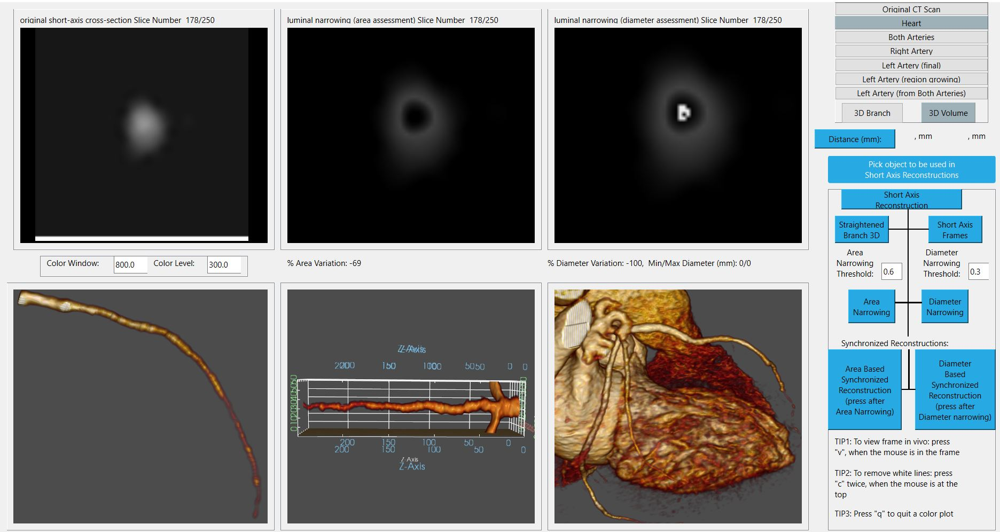
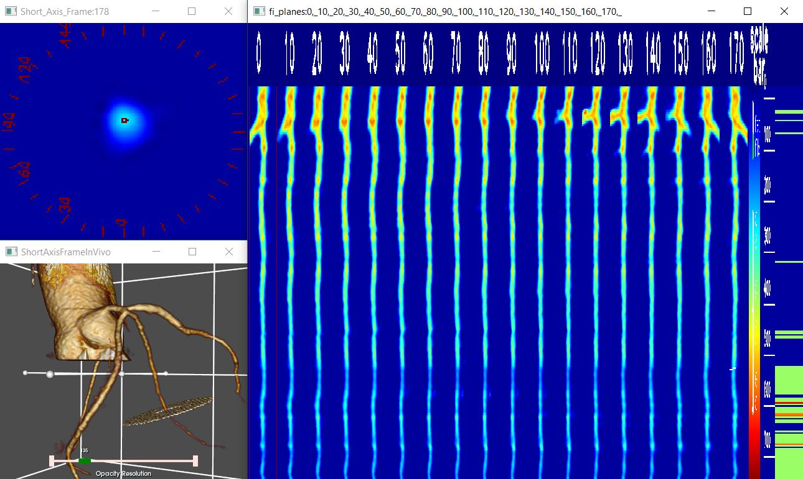

Отслеживание и анализ сосудов (VA)
Отслеживание и анализ сосудов - это набор полностью автоматизированных или полуавтоматических алгоритмов построения центральной линии просвета сосуда и генерирования его поперечных сечений как вдоль хода центральной линии, так и в перпендикулярном ей направлении.
Программа создаёт набор изогнутых многоплоскостных реконструкций, распрямлённых вдоль центральной линии просвета. Элементами данного набора являются продольные сечения сосуда, отличающиеся друг от друга величиной угла поворота вокруг продольной оси распрямлённого сосуда. Их анализ позволяет оценить положение ветвей, а также расположение и продольную протяженность бляшек, количественно оценить просвет сосуда.
Можно выполнять автоматизированные измерения просвета сосуда в плоскостях перпендикулярных центральной линии с целью выявления стеноза. Для сечений, представляющих клинический интерес, возможно отображение их положений на трехмерной объемной визуализации.
Для коронарных артерий, которые малы, имеют извилистый ход, или при недостаточном качестве изображения, получаемого с помощью КТ для автоматического построения линии центрального просвета, имеется полуавтоматический алгоритм её построения.
Визуализации продольных и поперечных сечений сосудов
На приведённых ниже рисунках справа представлены сечения артерии вдоль распрямлённой ценртальной линии, построенные с углами поворота шагом в 10 градусов. Слева сверху показано одно из поперечных сечений в области стеноза, слева внизу приведена трёхмерная визуализация положения плоскости этого поперечного сечения.
